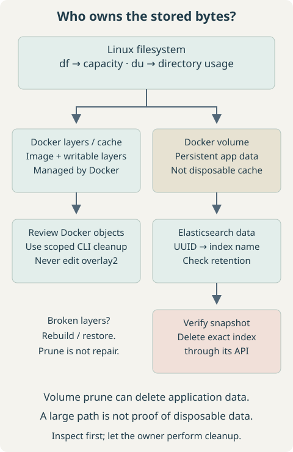
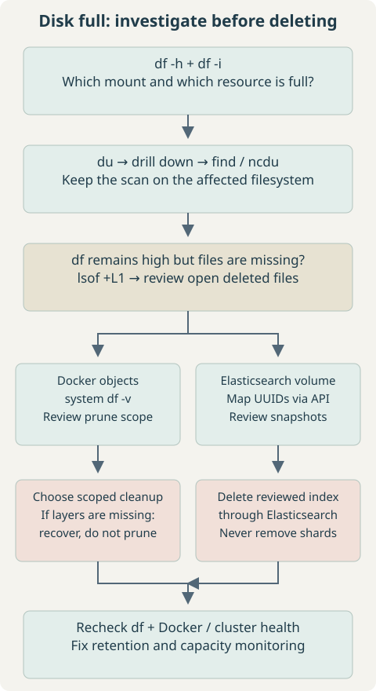

1. Problem Overview
A filesystem reached capacity. Investigation led through large directories into Docker storage and an Elasticsearch volume. Manually removing Docker layer directories then introduced a second problem: Docker metadata referred to files that no longer existed, causing build failures such as:
ERROR: stat /var/lib/docker/overlay2/<layer-id>: no such file or directoryTreat disk pressure and storage corruption as separate problems. Reclaiming bytes does not repair missing layers. This runbook starts with observation, then uses the storage owner’s cleanup mechanism. Commands target a Linux host with GNU tools and Bash; replace placeholders before running them. Docker commands must target the same host you are inspecting, not a remote context.
2. Check Which Filesystem Is Full
df -h
df -i
df -h /var/lib/dockerIn df -h, inspect Use%, Avail, and Mounted on. Near 100% with little available space indicates block-space pressure. df -i checks inode availability: a filesystem can run out of file entries even with free bytes. Inode reporting varies by filesystem. A path argument identifies the filesystem containing that path; substitute the actual data location.
Repeated overlay mounts in df can report the same backing capacity. Do not add them together. If the full mount is separate from /, start subsequent scans at that mount. If both bytes and inodes look healthy, investigate quotas, filesystem errors, and the exact path in the failing write.
3. Find the Largest Directories
For a quick top-level overview, show totals in ascending order or largest first:
sudo du -sh /* 2>/dev/null | sort -h
sudo du -sh /* 2>/dev/null | sort -rh| Flag | Meaning |
|---|---|
du -s | Summarize each supplied path. |
du -h | Display readable sizes. |
sort -h | Sort human-readable size values. |
sort -rh | Reverse that ordering: largest first. |
2>/dev/null | Hide diagnostic messages, including real read errors. |
These broad scans cross mount boundaries and the shell’s * omits hidden entries. Suppressing errors makes output quieter, not complete. For a more focused root-filesystem scan, use GNU du’s one-filesystem and one-level options:
sudo du -xhd1 / | sort -rh-x avoids descending onto a different filesystem; -d1 reports the root and immediate child totals. The root total is included, so it will usually be the largest line. Mounts and bind mounts still require interpretation. See the GNU du reference.
Drill into the largest branch, rather than repeatedly scanning everything:
sudo du -sh /var/* 2>/dev/null | sort -rh
sudo du -sh /var/lib/* 2>/dev/null | sort -rh
sudo du -sh /var/lib/docker/* 2>/dev/null | sort -rhThe shell expands wildcards before sudo runs. If your account cannot list a protected directory, the last command can miss everything. This alternative lets privileged du enumerate the directory itself, includes hidden entries, and keeps errors visible:
sudo du -xhd1 /var/lib/docker | sort -rhReplace the path if Docker uses a different data root. du measures reachable allocated file blocks; df measures filesystem accounting. Open-but-deleted files, metadata, reservations, snapshots, shared extents, and different mount boundaries can explain discrepancies. Large scans create I/O load; narrow the scope on busy hosts.
4. Find Large Individual Files
List regular files larger than 1 GiB on the root filesystem:
sudo find / -xdev -type f -size +1G -print 2>/dev/null-xdev stays on the starting filesystem, -type f selects regular files, and GNU find’s G uses 1,073,741,824-byte units. For a separate data filesystem, replace / with its mount point.
For a largest-first report with readable byte counts:
sudo find / -xdev -type f -printf '%s %p\n' 2>/dev/null \
| sort -nr \
| head -n 20 \
| numfmt --field=1 --to=iec%s is apparent length in bytes, which can greatly exceed allocated space for sparse files. sort -nr sorts numerically in reverse; numfmt converts the first field for display. This line-oriented report is for human review, not deletion: filenames containing newlines can break its records. Sorting huge inventories may require temporary space; narrow the scan or use a healthy scratch filesystem. Re-run without error suppression when completeness matters.
5. Use ncdu for Interactive Investigation
If not installed, use the appropriate package manager. Installing packages itself needs working disk space; do not attempt it on a completely full root filesystem.
sudo apt-get update
sudo apt-get install ncdusudo dnf install ncduPackage availability depends on enabled repositories; some RHEL-family releases require an additional repository such as EPEL. Browse with arrows and Enter, then quit with q:
sudo ncdu /Normal ncdu can delete files. Prefer read-only browsing constrained to one filesystem for an incident investigation:
sudo ncdu -x -r /-x avoids crossing filesystems; -r disables deletion. Point it at the full mount or a suspect subtree to reduce scan time.
6. Never Manually Delete overlay2
Do not modify Docker-managed layer files to reclaim space. With the classic overlay2 driver, /var/lib/docker/overlay2/ contains image and container filesystem layers tied to daemon metadata. Removing a directory breaks those references; a running container may fail later even if it initially appears healthy.
# DO NOT RUN — this destroys Docker-managed layers:
# sudo rm -rf /var/lib/docker/overlay2/*The missing-layer error in this runbook is consistent with that damage, but the same error should also prompt checks for a missing mount, wrong data root, or filesystem failure. Do not create empty replacement layer directories or delete more internals to silence it.
docker context show
docker infoRead Docker Root Dir and Storage Driver. Not every installation uses overlay2: Docker’s containerd image store can keep images and snapshots under /var/lib/containerd, and rootless or customized installations use other paths. The reset procedure below is deliberately limited to a classic overlay2 host. See Docker’s storage-location documentation.


7. Reclaim Docker Space Through Docker
Keep the daemon running for CLI inspection and cleanup. First review the local inventory and mount associations:
docker system df
docker system df -v
docker ps -a --size
docker image ls
docker volume ls
docker inspect --format '{{json .Mounts}}' '<container_id>'The verbose report distinguishes images, containers, local volumes, and build cache. Shared layers complicate sums, and container writable-layer size does not include all logs, bind mounts, or volume data. “Reclaimable” means Docker considers an object unused; it does not mean its contents are unimportant.
| Command | Removal scope / consequence |
|---|---|
docker container prune | All stopped containers, including their writable layers and local container state. |
docker image prune | Dangling images by default; tagged but unused images remain. |
docker builder prune | Dangling build cache by default; -a widens to all unused build cache. Future builds may be slower. |
docker volume prune | On current Engines, unused anonymous local volumes; persistent data can be lost. |
docker system prune | Stopped containers, unused networks, dangling images, and unused build cache. Volumes excluded by default. |
docker system prune -a | The same categories, plus all images not associated with a container, including tagged images. |
Destructive choices, not a sequence: review the affected category and command’s confirmation prompt before selecting one. Prune has no general-purpose dry-run mode. These examples intentionally omit -f, which would skip confirmation.
docker container prune
docker image prune
docker builder prunePersistent-data risk: on current Engines, this deletes anonymous local volumes referenced by no container. Stopped containers still count as references until removed. Removing containers first can make their volumes eligible for a later prune.
docker volume pruneCheck the installed version and help before relying on these defaults. Older Engines differ. Current docker volume prune --all also includes unused named volumes, so a name is not protection. See the volume prune reference and builder prune options.
Broader destructive cleanup: choose one only if every affected category in the table is disposable. Neither command reconstructs missing layers.
docker system prune
# More aggressive alternative:
docker system prune -aAdding --volumes to system prune also targets eligible anonymous volumes on current Engines; -a expands image removal, not volume removal to all named volumes. Avoid combining volume cleanup with a broad prune during storage diagnosis. The system prune reference defines the exact scope. Prefer a reviewed single-object removal when possible.
8. Recover After Manual Layer Deletion
Inspect the daemon while it is available, and record failures before changing anything else:
sudo systemctl status docker
sudo journalctl -u docker --no-pager -n 200
docker ps -a
docker images
docker system dfLook for missing layer paths and filesystem or mount errors. Pruning is not a metadata repair tool. Affected images may need to be pulled or rebuilt and containers recreated from their original configuration; lost writable-layer data requires a backup. Re-pulling alone may not fix records that still claim a layer exists. Preserve volumes and bind-mounted application data independently, and avoid exporting known-damaged images as your only backup.
Last resort: a fresh Docker store is an outage and a rebuild, not routine disk cleanup. Use the following only for a standalone, rootful Linux host where you verified classic overlay2, the default data root, a dedicated containerd service, and a data-root directory that is not itself a mount point or symlink. Do not apply it to Kubernetes nodes, shared containerd services, Docker Desktop, Swarm nodes, or the containerd image store without an environment-specific recovery plan.
Before stopping services, obtain verified application backups, deployment definitions, and secrets from their proper stores. For Elasticsearch, use a successful repository snapshot; copying its data directory is not a supported backup. Gracefully stop all application containers through their deployment mechanism, including live-restore workloads, so no process continues writing. Expand capacity or recover space elsewhere if necessary.
findmnt -T /var/lib/docker
findmnt -R /var/lib/dockerA data root that is a dedicated mount requires a different migration plan. Investigate any remaining container mounts; do not force-unmount a live workload. The next commands stop Docker’s socket activation as well as its service; stop containerd only under the dedicated-service assumption above.
sudo systemctl stop docker.service docker.socket
sudo systemctl stop containerd.serviceDo not run Docker CLI prune commands while the daemon is stopped. Check that all workload processes and mounts are quiescent before proceeding. Moving the store out of the way makes its local containers, images, cache, network metadata, and managed volumes unavailable to a fresh daemon; bind-mount contents outside it are not moved.
Recovery-copy step: for the verified ordinary-directory layout only, use a new destination name and refuse to overwrite an existing recovery copy. Same-filesystem rename normally needs little extra space but reclaims no bytes. A move to another filesystem needs enough destination capacity and involves copying data.
sudo test ! -e /var/lib/docker.recovery &&
sudo mv -- /var/lib/docker /var/lib/docker.recoveryIf the command fails, stop and investigate rather than continuing. A renamed corrupt store is evidence and a possible data source, not a guaranteed rollback or database backup. Only after the move succeeds and there is headroom for a new store, restart the dedicated runtime:
sudo systemctl start containerd.service
sudo systemctl start docker.service
docker info
docker ps -aExpect an empty local container inventory. Rebuild deployment state and restore application data through supported procedures before resuming traffic. Do not copy broken layer metadata into the new store. Keep the recovery directory until recovery and retention decisions are verified; disposing of it later permanently removes any remaining local volume data. This article intentionally provides no blanket deletion command for it.
9. Investigate the Elasticsearch Volume
First confirm the actual volume mount rather than assuming a path. These commands inspect metadata, not document contents:
docker inspect --format '{{json .Mounts}}' '<container_id>'
docker volume inspect elasticsearch-dataFor a local volume, inspect the reported host mountpoint. The example below assumes the configured Elasticsearch data path has an indices child directly there. Older layouts can include nodes/0/indices; bind mounts, volume plugins, and custom data paths differ.
/var/lib/docker/volumes/elasticsearch-data/_data/indices/Read-only size inspection is useful. This variant expands the protected glob inside a privileged shell:
sudo sh -c 'du -sh /var/lib/docker/volumes/elasticsearch-data/_data/indices/*' \
| sort -rh \
| head -n 10
sudo du -sh /var/lib/docker/volumes/elasticsearch-data/_data/indicesDirectory names are generally internal index UUIDs, not names such as application-logs-2026.09.01. Replace the UUID placeholder to inspect its shard subdirectories:
sudo sh -c 'du -sh /var/lib/docker/volumes/elasticsearch-data/_data/indices/"<index-uuid>"/*' \
| sort -rhThese are local-node observations while files may be changing. They need not equal cluster-wide API totals and do not establish that an index is safe to remove.
10. Never Delete Index Directories Directly
Do not remove files from a live or stopped Elasticsearch data directory as a cleanup technique. Elasticsearch coordinates cluster metadata, shard state, translogs, and Lucene files. Direct removal can leave missing or corrupt shards and destroy data that is not recoverable from replicas.
# DO NOT RUN — this bypasses Elasticsearch and can corrupt shards:
# rm -rf /var/lib/docker/volumes/elasticsearch-data/_data/indices/"<index-uuid>"Use Elasticsearch’s deletion API. For backup and disaster recovery, use supported repository snapshots: raw filesystem copies are not a supported way to back up a cluster, even if Elasticsearch is stopped. See snapshot and restore guidance.
11. Map UUIDs to Elasticsearch Index Names
The HTTP examples assume an intentionally unsecured local lab endpoint. For a secured cluster use its HTTPS URL, trusted CA, and an authorized credential workflow. Do not disable certificate checking or paste credentials into URLs. For example, curl can prompt for the password rather than putting it in shell history:
curl --fail-with-body -sS --cacert /path/to/http_ca.crt \
--user '<username>' 'https://localhost:9200/_cat/indices?v'Use the hostname covered by the server certificate. The commands below use --fail-with-body (curl 7.76+) to return a failure status for HTTP errors while retaining their explanation; -sS suppresses the progress meter but shows errors. Keep the same TLS/authentication options for subsequent production requests.
curl --fail-with-body -sS 'http://localhost:9200/_cat/indices?v'
curl --fail-with-body -sS \
'http://localhost:9200/_cat/indices?v&h=health,status,index,uuid,pri,rep,store.size,pri.store.size&s=store.size:desc'Match uuid to the directory name. store.size covers primary and replica shards reported across the cluster; pri.store.size covers primaries. Local du totals can also include translog and other files outside the reported Lucene store metric. Hidden indices and permissions affect visibility; an unmatched directory is not permission to delete it. For an authorized review of hidden indices, add expand_wildcards=all. CAT output is intended for human inspection, not an automated deletion parser. See the CAT indices reference.
12. Delete Reviewed Indices Through Elasticsearch
List candidates by size, then review their purpose, retention requirements, ingestion dependencies, and recoverability. Size is not a retention policy.
curl --fail-with-body -sS \
'http://localhost:9200/_cat/indices?v&h=health,status,index,uuid,store.size&s=store.size:desc'Permanent data deletion: confirm a successful, restorable snapshot covers the exact index if recovery is required. Replace the placeholder with one explicit index name; avoid wildcards and _all. Elasticsearch, not the shell, must coordinate the removal:
curl --fail-with-body -sS -X DELETE 'http://localhost:9200/<index_name>'Expect an acknowledgment, then check API state and actual disk recovery. A failed response is not success. A data stream’s current write index cannot be deleted directly; manage rollover and backing-index retention through the appropriate lifecycle policy. An alias is not a substitute for an explicit target index. See the delete-index API.
curl --fail-with-body -sS 'http://localhost:9200/_cat/indices?v'
curl --fail-with-body -sS 'http://localhost:9200/_cat/allocation?v'
curl --fail-with-body -sS 'http://localhost:9200/_cluster/health?pretty'
df -hReclamation may not be instantaneous. At flood-stage disk pressure, Elasticsearch can apply read_only_allow_delete; deleting an entire reviewed index is different from deleting documents. Fix capacity first rather than disabling disk safeguards. Current versions release the block when usage falls below the high watermark; check the watermark troubleshooting guide for the installed version.
13. Recognize Dangerous Largest-Directory Pipelines
This common dry run only prints paths; it performs no deletion. It assumes simple directory names without whitespace:
sudo du -sh /path/to/indices/* \
| sort -rh \
| head -n 10 \
| awk '{print $2}'awk splits on whitespace, so this loses parts of paths containing spaces or tabs. Newlines are another problem. Even correctly parsed paths say nothing about ownership, snapshots, active writes, or recovery requirements.
DANGEROUS — DO NOT USE AGAINST LIVE ELASTICSEARCH OR DOCKER-MANAGED DATA. The following is a recognition example, deliberately commented out so copying it does not run deletion:
# DO NOT RUN:
# sudo du -sh /path/to/indices/* \
# | sort -rh \
# | head -n 10 \
# | awk '{print $2}' \
# | xargs sudo rm -rfWhitespace and quoting errors can select the wrong paths, and the filesystem can change between listing and removal. NUL-delimited handling would address some filename problems but would not make deleting managed storage valid. Keep discovery separate from a reviewed application-level action.
14. Deleted Files Still Consuming Space
A process can hold an unlinked file open. The pathname disappears, but its blocks remain allocated until the last reference is released. Look for open files with a link count below one:
sudo lsof +L1Inspect the process, device, file descriptor, and size. Match the device to the full filesystem; multiple descriptors can refer to the same file, so do not blindly sum sizes. If a service supports log reopening, use that documented operation; otherwise arrange a controlled restart. Verify that the reference disappears and df improves. Do not kill arbitrary processes or truncate database files through /proc.
A missing path in du does not mean the bytes are gone. Large rotated logs are a common case; a busy memory mapping or another descriptor can also keep an unlinked file alive.
15. Recommended Disk-Full Sequence
- Check
df -handdf -i; identify the affected mount. - Rank directories on that filesystem and drill into the largest branch.
- Find unusually large files and compare apparent size with allocated usage.
- Check deleted-but-open files with
lsof +L1. - For Docker storage, confirm the context and data root, then inspect
docker system df -v. - Never edit overlay2. If layers were already removed, follow a recovery plan rather than expecting prune to repair them.
- For Elasticsearch volumes, map local UUID directories to API index names and verify retention and snapshots.
- Use one reviewed Docker cleanup action or delete the reviewed Elasticsearch index through its API.
- Recheck filesystem capacity and application health; investigate discrepancies before repeating deletion.


df -h
df -i
sudo du -sh /var/lib/docker
docker system dfUse the actual data root and full mount. Run Docker CLI checks only when its daemon is running. A full root filesystem can also disrupt logging, package management, databases, and service startup; verify those secondary failures after capacity is restored.
16. Operational Lessons
- Treat Docker’s internal store as daemon-managed state, not an ordinary folder to empty.
- Separate disposable images and build cache from persistent volumes and writable-layer data.
- Use database and search-engine APIs for deletion; index UUID directories are not disposable files.
- Inspect before deleting. A dry run improves review but does not establish that data is safe to remove.
- Monitor both bytes and inodes, growth rate, and time to exhaustion well before 100%.
- Use log rotation, bounded build-cache retention, and Elasticsearch lifecycle policies to prevent recurrence.
- Keep tested backups and enough spare capacity for snapshots, recovery, and normal filesystem work.
17. Quick Command Reference
Read the linked destructive-action sections before running cleanup. This reference assumes the same host, data root, and local lab endpoint described above.
df -h
df -i
sudo du -xhd1 / | sort -rh
sudo du -xhd1 /var | sort -rhsudo find / -xdev -type f -size +1G -print 2>/dev/null
sudo lsof +L1docker system df
docker system df -vDestructive cache cleanup: only when the selected builder’s dangling cache can be discarded. Review the confirmation prompt; see Docker cleanup scopes for other categories.
docker builder prunecurl --fail-with-body -sS \
'http://localhost:9200/_cat/indices?v&h=index,uuid,store.size&s=store.size:desc'Permanent index deletion: use one reviewed exact name only after the snapshot and retention checks. No filesystem removal is involved.
curl --fail-with-body -sS -X DELETE 'http://localhost:9200/<index_name>'